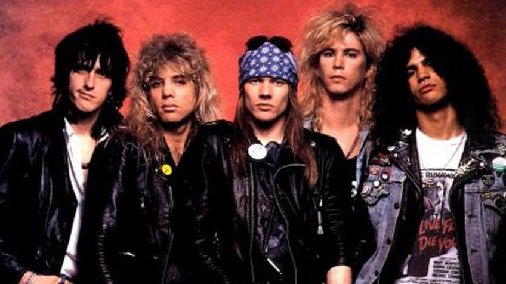
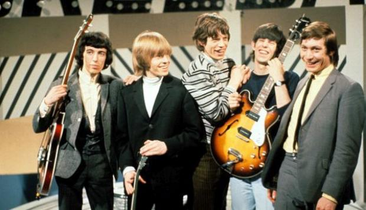
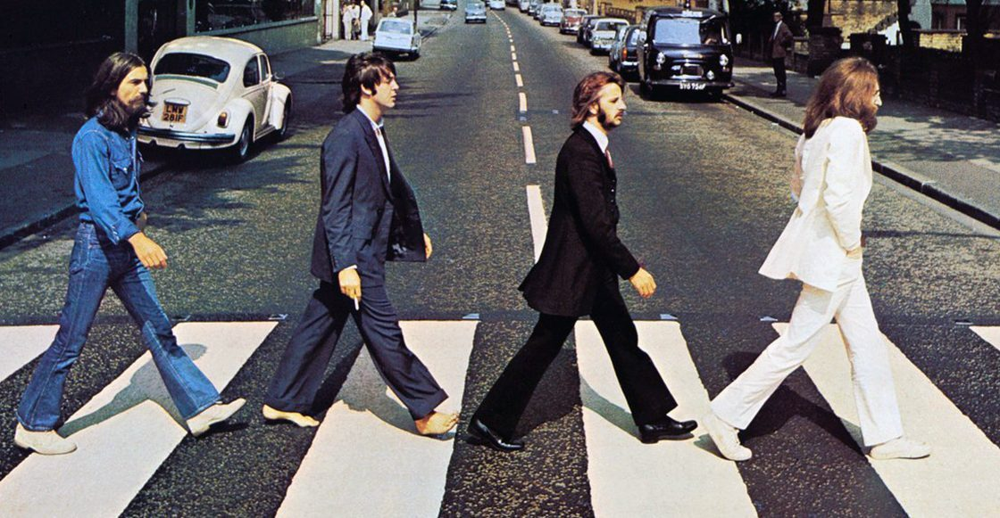

Guns N' Roses es una banda estadounidense de hard rock formada en Hollywood en la zona de Sunset Strip, en la ciudad de Los Ángeles, California en 1985. El grupo fue fundado por el vocalista Axl Rose y el guitarrista Izzy Stradlin.6 Asimismo, la banda es uno de los números artísticos más exitosos de la historia musical, debido a sus grandes ventas, numerosos galardones, legado y repercusión mundial hasta la fecha. También Guns N' Roses es considerada una de las bandas más influyentes de la historia debido a su gran legado musical.1 En el año 2011 también fueron posicionados en el puesto número 21 en la lista de "los 100 mejores artistas de la historia", elaborada por la revista Rolling Stone en conjunto con diversos productores y críticos musicales.
 The Rolling Stones es una banda británica de rock originaria de Londres. La banda se formó en abril de 19622 por Brian Jones, Mick Jagger, Keith Richards, Bill Wyman, Ian Stewart y Charlie Watts.2 Brian Jones fue despedido en junio de 1969, falleciendo tres semanas después, siendo reemplazado por el guitarrista Mick Taylor, que dejaría el grupo en 1975 y sería a su vez reemplazado por Ron Wood. Con el retiro de Bill Wyman en 1993 se incluyó al bajista Darryl Jones que, aunque toca con la banda desde la grabación del álbum Voodoo Lounge en 1994, no es un miembro oficial.
 The Beatles fue una banda de rock9 inglesa activa durante la década de 1960, y reconocida como la más exitosa comercialmente y la más alabada por la crítica en la historia de la música popular y de la música rock. Formada en Liverpool, estuvo constituida desde 1962 por John Lennon (guitarra rítmica, vocalista), Paul McCartney (bajo, vocalista), George Harrison (guitarra solista, vocalista) y Ringo Starr (batería, vocalista). Enraizada en el skiffle y el rock and roll de los años 1950, la banda trabajó más tarde con distintos géneros musicales, tales como rock and roll y pop de los 50's, rock pop, música beat, folk rock, rock psicodélico hasta hard rock, incorporando a menudo elementos clásicos, entre otros, de forma innovadora en sus canciones. La naturaleza de su enorme popularidad, que había emergido primeramente con la moda de la «beatlemanía», se transformó al tiempo que sus composiciones se volvieron más sofisticadas. Llegaron a ser percibidos como la encarnación de los ideales progresistas, extendiendo su influencia en las revoluciones sociales y culturales de la década de 1960.